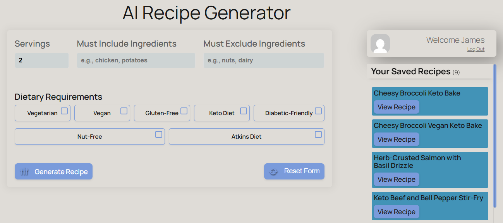

Recipe Generator Ai
Recipe Generator Ai
Recipe Generator Ai is a modern, fully responsive AI-Powered Recipe Generation plugin for your food blog.

Key Features
- AI-Generated Recipes: Create endless recipes with custom serving sizes, dietary filters (vegan, gluten-free, etc.), and ingredient constraints.
- SEO-optimized recipes in seconds! Perfect for bloggers, chefs, and content creators.
- Built-in Schema Markup: Automatic JSON-LD structured data boosts SEO and helps your recipes appear in rich search results (Google’s "Recipe" carousel).
- Customizable Templates: Match your brand with adjustable templates for recipes, categories, and tags.
- Print & Share Tools: Let visitors print recipes or share them on social media—no extra plugins needed!
- Saved Favorites: Users can save recipes to their accounts, increasing engagement.
Future / Pro Updates
- Graph styles for Nutritional Information.
- Options for customizing theme/colors.
- Server side processing for larger memberships
- detailed user data / usage metrics / user control
Installation
WordPress Repository
Update to include WordPress installation guide when available on the Repository.
Manual Installation
Download the Recipe Generator .zip file, then in your WordPress Plugins admin page, click "Add Plugin", then "Upload Plugin", and select the downloaded .zip file from your "downloads" folder.
Activate the plugin when promted.
Add the [recipe_generator] shortcode wherever you wish to display the Keto Calculator.